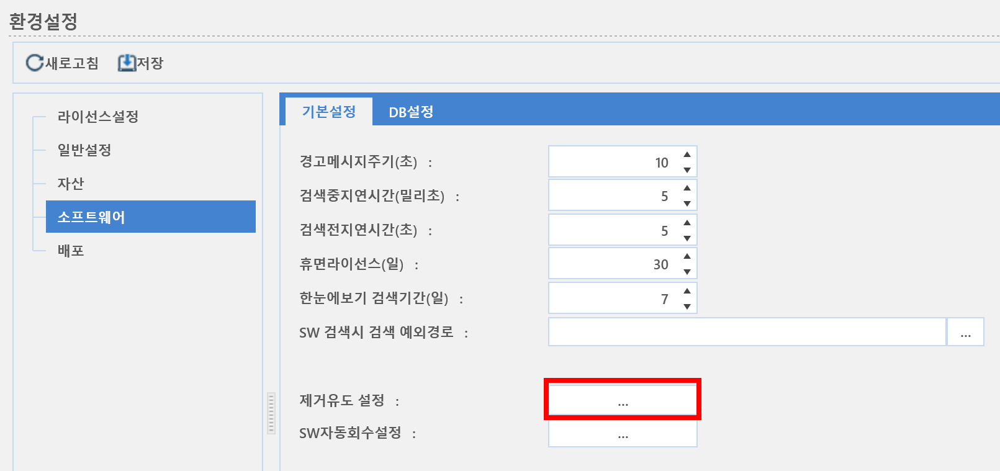
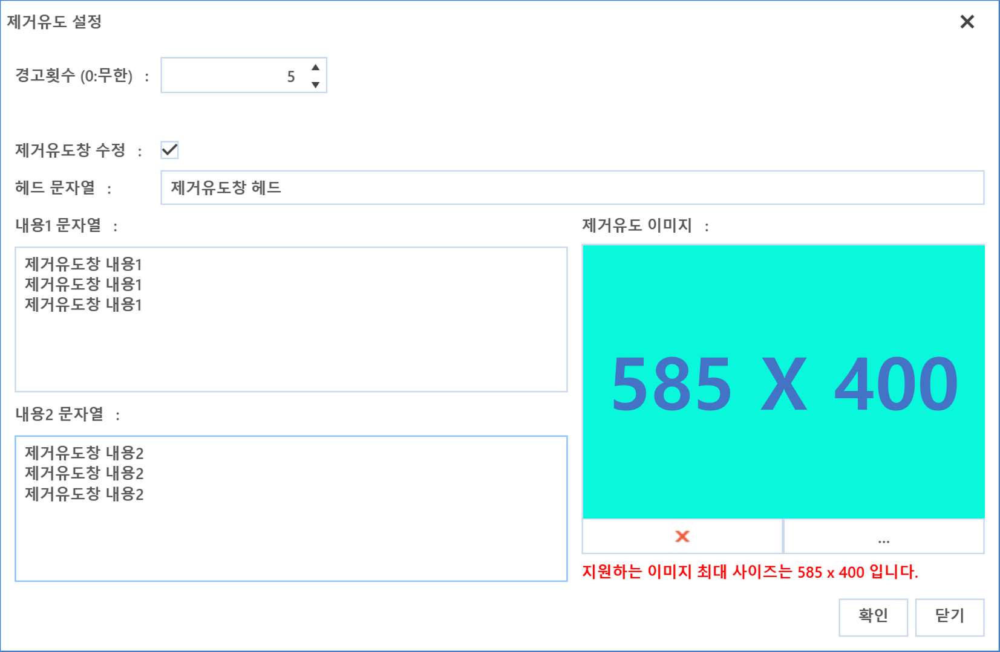

2-1-4-1-1. 제거유도 설정
2-1-4-1-1. 제거유도 설정
Source: https://www.sweeper.or.kr/etc/manual/21411.html
2-1-4-1-1. 제거유도 설정
2. 홈 ›› 2-1. 환경설정 ›› 2-1-4. 소프트웨어 ›› 2-1-4-1. 기본설정 ››


인가되지 않은 SW가 사용자의 PC에 이미 설치된 경우, 관리자는 SW설정에서 이를 삭제할 수 있도록 제거유도를 할 수 있습니다. 이 때 사용자 PC에 팝업되는 제거유도창의 메시지 문구를 관리자나 기업이 원하는 문구로 수정이 가능합니다.
설정 방법
1) 제거유도 설정 우측의 버튼을 클릭합니다.

2) 경고메시지 횟수 및 내용을 수정합니다.

-
설명
-
경고횟수 : 불법 소프트웨어를 설치한 사용자 PC에 몇번의 경고메시지 팝업할 지 횟수 지정
- 제거유도창 수정 : 기본 제공하는 제거유도창을 수정하고자 할 때 체크
- 헤드 문자열 : 한줄 40글자까지 입력 가능합니다.(다음줄 입력 불가)
- 내용 1문자열 : 한줄 당 50자까지만 출력됩니다. (입력은 되지만 실제 출력시 잘립니다.)
- 추가 입력을 원하면 다음줄에 입력하세요.
- 내용 2문자열 : 한줄 당 40자까지만 출력됩니다. (입력은 되지만 실제 출력시 잘립니다.)
- 추가 입력을 원하면 다음줄에 입력하세요.
- 제거유도 이미지: : 제거 유도창에 나타나는 이미지로 지원하는 이미지의 최대 사이즈는 585*400입니다.
3) Agent 재시작
적용할 장비(그룹)를 선택하고, 우클릭 명령으로 에이전트를 재시작 합니다. 자세한 사항은 10-4-4-2. AGENT 재시작 을 참고하시기 바랍니다.
참고사항
-
제거유도창을 띄우기 위해서는 해당 PC에 "SW자산관리"라는 작동기능과 "경고창 표시"라는 SW정책이 있어야 합니다.
-
관리콘솔에서 변경한 문구는 에이전트가 재시작될 때 적용됩니다.
-
SWeeper에서 기본 제공하는 제거 유도 문구는 다음과 같습니다.

© Copyright SWeeper Inc.. All Rights Reserved